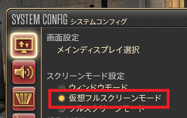
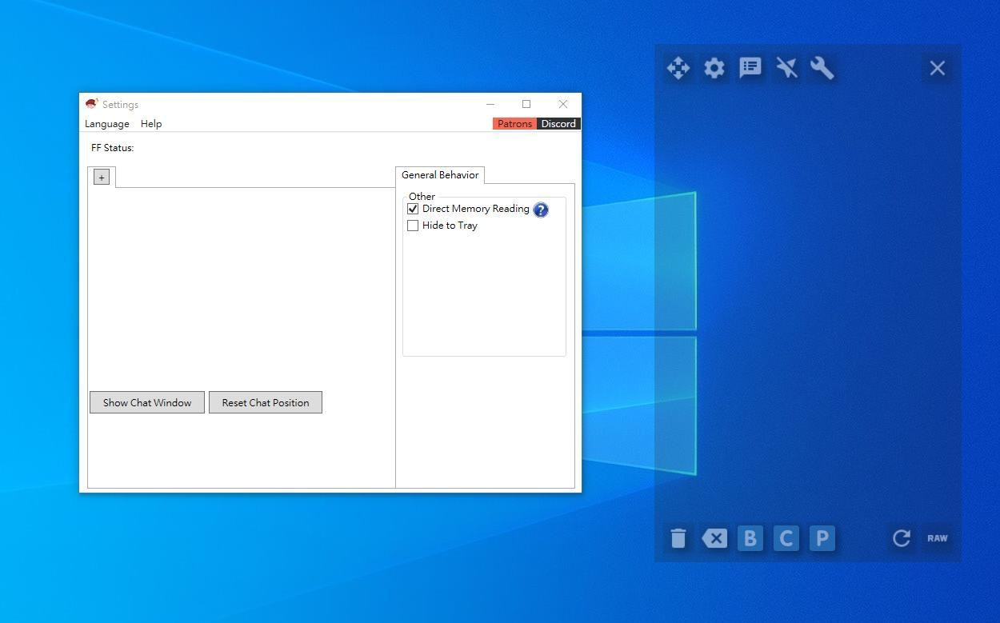
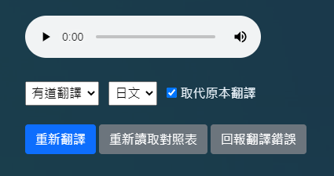

這程式安全嗎
此應用程式僅有翻譯對話的功能，不會修改FF14的任何檔案，也不會抓取遊戲的數值和資訊，翻譯結果皆從翻譯網站擷取，並不會在您的電腦上安裝翻譯軟體，請放心使用這程式支援什麼語言
支援日文和英文，但翻譯以日文版為主能與漢化一起使用嗎
可以，但部分情況下翻譯可能會不正確Node視窗無法維持在最上層
請至FF14的【系統設定】將【顯示模式】改為【無邊框全螢幕模式(Borderless Windowed)】
啟動時出現listen EADDRINUSE: address already in use 127.0.0.1:8898
代表127.0.0.1:8898這IP已被電腦上的某個應用程式所佔用，遇到這錯誤的話可以重新開機或是更改本應用程式的port來解決，修改步驟如下：A. 修改TataruHelper /app-0.9.106裡面的server.json，將port的8898改為其他數值(例如8899)然後重新啟動TataruHelper
B. 開啟Node版的應用程式設定，切到系統頁將port改成你剛剛輸入的數值(例如server.json的port是8899，這邊也要輸入8899)，修改後按下儲存設定
C. 如果儲存設定後仍然跳出listen EADDRINUSE: address already in use的訊息，就嘗試其他的數值(8890、8891、8892......以此類推)，數值5000~65535皆可使用，但TataruHelper和Node的連線設定要一致才行
如何查看錯誤訊息
Ctrl+F12每一句都要手動選取翻譯嗎
不需要，大部分的劇情字幕都是會自動翻譯的只要啟動【Tataru Helper】和【Tataru Helper Node】即可使用自動翻譯功能

如何重新翻譯
滑鼠點選想要重新翻譯的字幕，再點選彈出視窗裡的【重新翻譯】按鈕即可
哪個翻譯引擎比較好
目前最推薦【有道翻譯】，翻不好就使用重新翻譯功能試試看其他翻譯引擎，如果用其他翻譯引擎也翻不好請使回報給旁白字幕無法擷取
請使用最新版本的Tataru Helper，並使用【全螢幕翻譯】功能(需使用Google Vision模式)
視窗半透明失效
請將【NVIDIA控制面板】的【廣域設定】恢復成預設值(感謝avbkopye沒牙提供解法)或是使用【全新安裝】的方式重新安裝NVIDIA驅動程式(安裝時選擇自訂即可看到此選項)
要等很久才會顯示翻譯
本應用程式是使用線上翻譯引擎， 因此翻譯速度取決於自身網路狀況和翻譯引擎方的伺服器狀況出現「翻譯錯誤」
原因可能是您的網路連不上該翻譯引擎，或是遇到流量限制，只能等翻譯引擎解除限制，或是使用別的翻譯引擎如何移動視窗
滑鼠按住左上的【十字箭頭】圖示即可移動視窗
螢幕擷取該使用哪種模式
建議使用【Google Vision】，因為Google Vision的辨識能力最為精準，若無法使用Google Vision才使用其他選項【快速】、【標準】、【最佳】各有優缺點，但精準度都比Google Vision差，且不一定每次都能正確地擷取文字
如何擷取對話選項和介面文字